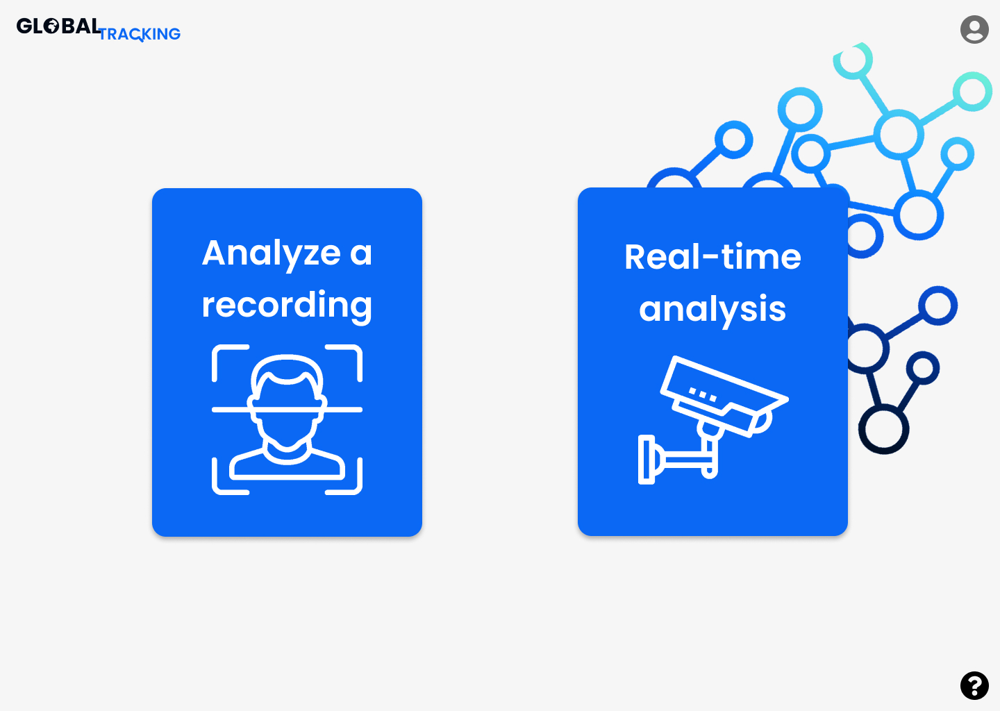
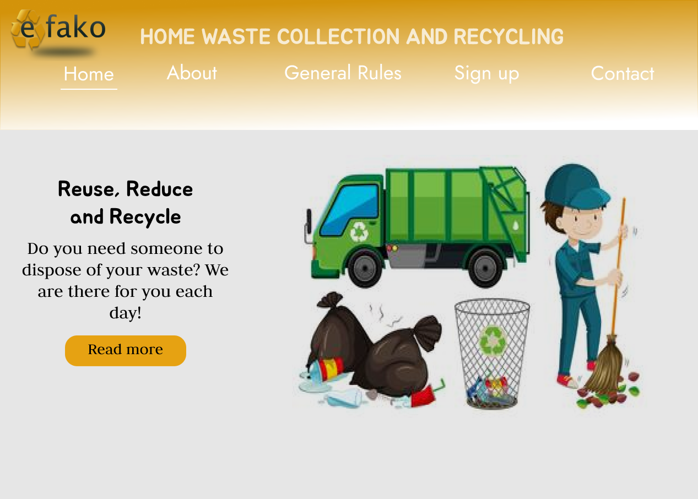

Développeur Web Fullstack | Création de Solutions Web
Je suis un développeur fullstack avec une passion pour la création
d’expériences web fluides. Expert en React, Node.js, et conception
backend scalable, j’aime relever des défis complexes et fournir des
solutions numériques impactantes.
Diplômé en informatique, j'ai acquis de l'expérience en
développement web à travers des projets académiques et personnels.
Spécialisé en développement front-end avec des connaissances de base
en back-end, j'aspire à créer des applications intuitives et
réactives. Toujours en apprentissage, je suis à la recherche de
nouvelles opportunités pour affiner mes compétences techniques et
contribuer à des projets impactants.
Compétences techniques
Frontend
HTML
CSS
JavaScript
React
Tailwind Css
Backend
Node.js
Django
Bases de Données
MySQL
Outils
Git
Github
VS Code
Compétences interpersonnelles:
Esprit d'équipe
Organisation
Soif d'apprendre
02.
Projets
Gasikarako
Conception d'un réseau social déstiner à la recherede de solutioin
pour l'amélioration de Madagascar.

Insitute Tracking
Application de supervision basé sur l’IA de reconnaissance facial.
Techno: Django, React,
PyTorch

e-Fako
Une application web qui facilite la recherche de nettoyeur et qui
contribut à la protection de l'environement.
Techno: Django, React
03.
Expériences
Stage en développement web
Un stage de trois mois (Mars 2024 - Juin 2024) chez
CNaPS. Notre mission a été de
concevoir une application web pour la gestion des projets de
l'entreprise.
Freelance
Création de petits sites web pour des projets personnels et pour
des amis ou des petites entreprises locales.
04.
Certifications et formations
Licence en informatique et télécommunication (2019-2023)
Parcours: Informatique
de Gestion, Génie Logiciel et Intelligence Artificielle.
(IGGLIA)